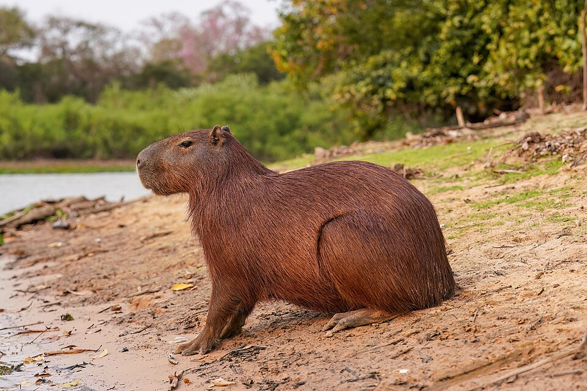
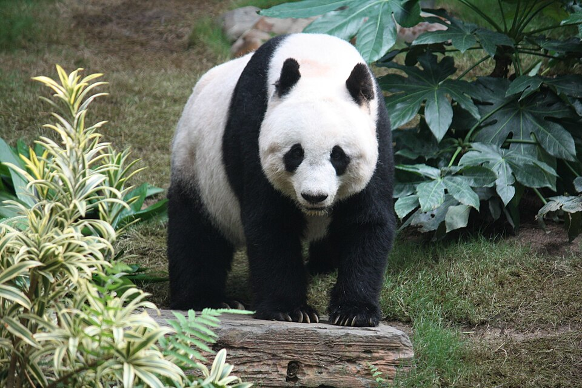

Bem-estar começa
na rotina.
Água limpa, alimentação adequada à espécie, espaço, estímulos e acompanhamento veterinário fazem parte do cuidado diário.
Dos pequenos companheiros aos gigantes da natureza. Descubra quem são, onde vivem e o que os torna tão especiais.
Vamos explorar ↗
Escolha um grupo ou siga a sua curiosidade.
Esse animal ainda não tem uma ficha na nossa seleção. Explore a pesquisa ampliada abaixo.
Nosso catálogo está começando. Pesquise outros animais na Wikipédia.

DIÁRIO DE DESCOBERTAS · 01O panda pertence à ordem dos carnívoros, mas sua alimentação é quase toda composta de bambu. A natureza adora surpreender.
Pequenas atitudes fazem uma grande diferença.
Água limpa, alimentação adequada à espécie, espaço, estímulos e acompanhamento veterinário fazem parte do cuidado diário.
Observe à distância, preserve os habitats e não alimente animais silvestres. Nunca retire um animal da natureza.
Saiba mais no Ibama ↗Reduza o lixo, evite plástico descartável e cultive plantas nativas. Conservar a biodiversidade começa perto de casa.
Explore a conservação ↗